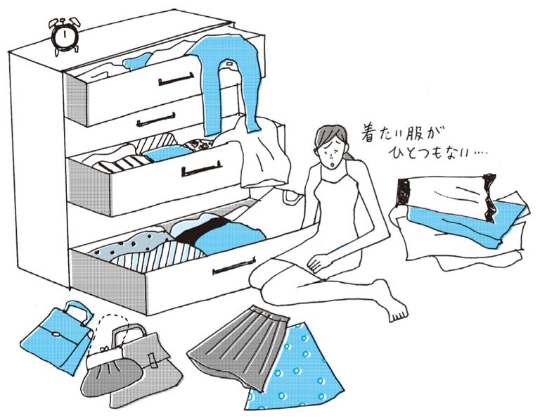
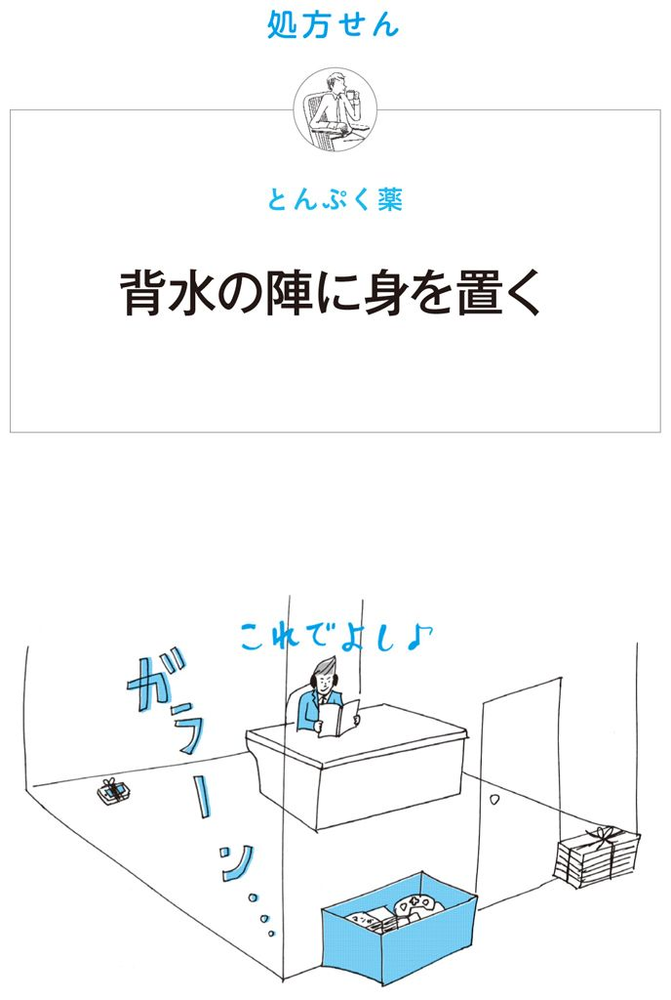
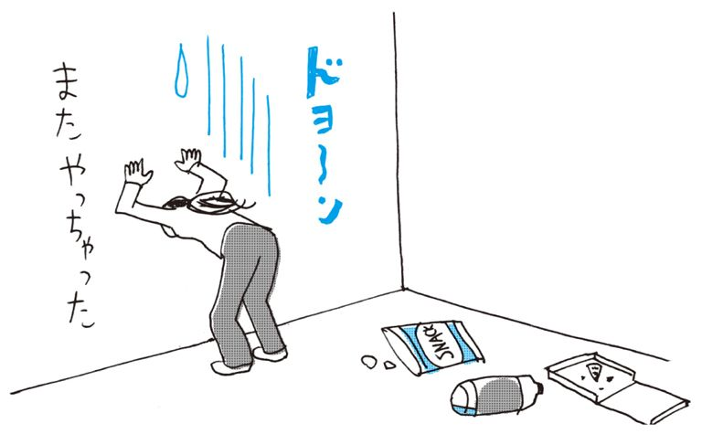
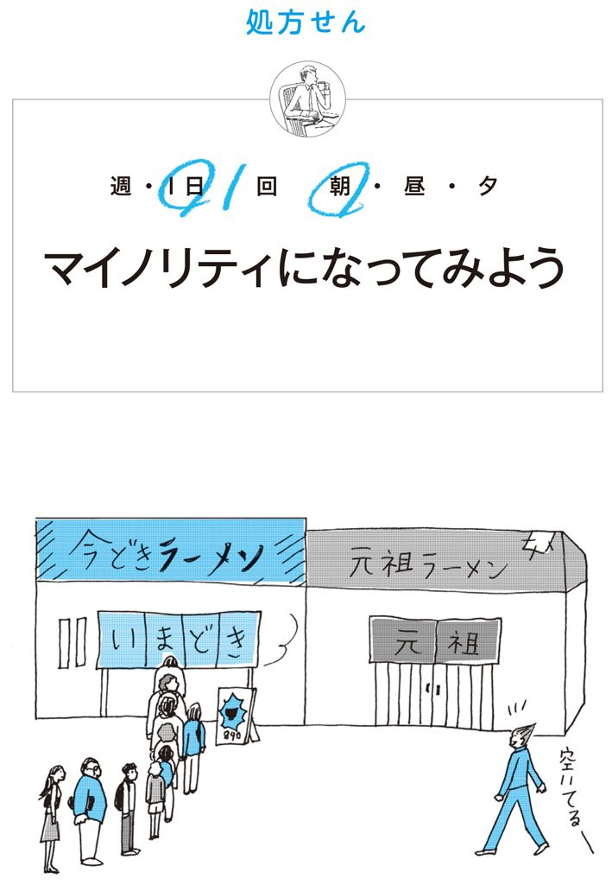

| めんどくさがりでもうまくいく時間術 | |
| ビジネススキル・トレーナーズ | |
| クロスメディア・パブリッシング(インプレス) (2012) | |
この本は横書きでレイアウトされています。
また、ご覧になる機種により、表示の差が認められることがあります。
はじめに
「めんどくさいなぁ......」という気持ちからついついサボったり、なまけたりして、人に迷惑をかけてしまった。または、ムダなお金や時間がかかってしまったというような失敗は誰にでもあるもの。
そのたびに、「このままじゃいけない」と思うものの、いつのまにか元のめんどくさがりに戻ってしまう......。多かれ少なかれ、こんな経験がある人は多いと思います。
この本には、そんなめんどくさがりでもうまくいく人のエッセンスが盛り込まれています。しかし、残念ながらめんどくさがりが治るというわけではありません。めんどくさがりというのは程度の差こそあれ、人間誰しも持っている本能のようなものなのです。
でも心配することはありません。世の中で活躍している人のなかには、「自分はめんどくさがりだ」と自覚している人もたくさんいます。
この本をつくるにあたって取材を重ねてきた、会社で""
では、どうしたらめんどくさがりでもうまくいくのか？ ただのめんどくさがりと、うまくいくめんどくさがりは何が違うのでしょうか？
実は、両者には明確な違いがあります。うまくいかない人は、めんどくさがりがよく患う５つの病気に侵されてしまっている可能性があります。詳しくは本文で説明しますが、なんでも先送りしてしまう「先のばし病」や、不規則な生活になりがちな「ダラダラ病」など、まず、これら悪しき習慣を払拭しなければなりません。
そこで必要となるのが時間術なのです。うまくいく人だって同じように「めんどくさい......」という気持ちが当然あります。しかし、その気持ちを時間管理という仕組みを用いることで、少しずつ改善しているのです。本書は、うまくいっている人たちが実際にやっていることをまとめたものです。
もともと、あなたと同じめんどくさがりが、どうやって自分をうまくコントロールしているのか、ぴったりな方法が見つけられるはずです。
気合いや根性でがんばるのではなく、この本の中のスキルを少しずつ取り入れていくことによって、あなたが少しずつ""
※本書掲載のアプリを、こちらのURLより一括ダウンロードできます。
#0-01
さて、めんどくさがりって悪いことでしょうか？
「悪いに決まってるだろ」と言う人もいるかもしれませんね。そういう人は自分がめんどくさがりなことで、たくさん後悔を味わってきた経験があるのかもしれません。
・締め切りに間に合わず、こっぴどく上司に怒られた
・連絡を怠ったことがきっかけで激しいクレームになった
・予約を後回しにしていたら満席になってしまった
などなど、こういった人の多くはめんどくさがりをなんとかして治したいと言います。
しかし冒頭でも述べたように、めんどくさがりを治さなくてもうまくいっている人はたくさんいます。ですから、めんどくさがりであることを否定的に考えるのではなく、まず、うまくいっているめんどくさがりから学ぶことです。その方が処方箋としては即効性があります。
めんどくさがりでもうまくいく人には、２つ大きなポイントがあります。
１つは「はじめに」で述べた、「時間管理が上手」だということ。
ムダがないように、効率的に物事を進めようという意識で動いているため、めんどくさいと思うことはあっても、それが原因で仕事に支障をきたしたり、取り返しのつかない問題が巻き起こったりする前に解決してしまいます。
そして、もう１つのポイントは「めんどくさいことはイヤだからやる」という考え方です。
どういうことかというと、「小さなめんどくさいこと」をほったらかしにしておいたら、さらにもっと「大きなめんどくさいこと」に発展し、とてつもない労力と時間がかかる。だから、小さいうちに片づけておくという考え方です。
これは、これまでの自分の失敗、ときには他人の失敗など、いろいろな失敗から学んでたどり着いた考え方だと思いますが、めんどくさがりがうまくいくためにはとても大事な考え方です。まさに「転ばぬ先の杖」ということわざのとおりです。めんどくさがりということを自覚した上で、それを強みに変えるように思考を変えましょう。
例えばＰＣのデータバックアップってめんどくさいですよね。でも、このちょっとめんどくさいことを怠ったために、ＰＣがクラッシュして休日がムダになってしまった、どうしても大事なデータを復旧してもらうために数十万円かかってしまったなんてことがないように。
#0-02
前項で述べてきたように、めんどくさがりであること自体が悪いというわけではありません。
問題なのは、「あ～めんどくせぇ」と思った後にとる行動です。この行動の違いが未来を分かちます。
例えば、めんどくさいから先のばししてしまう「先のばし病」。めんどくさいから週末家から出ないでゴロゴロしてる「ダラダラ病」。めんどくさいから時間にルーズな「時間を守れない病」など。間違った行動をとり続けていくと、めんどくさがりはさまざまな病を患います。
一方、同じめんどくさがりでも、「めんどくさいけど、もっとめんどくさくなるのはご免だから先にやっておこう」と、先のことをきちんと考えて正しい行動をとることができると、まわりからは「お前がめんどくさがり？ そんなことないよ」と、しっかりしている人に見られます。
同じめんどくさがりでも、ちょっとした行動の積み重ねが大きな差となって表れてきます。人生というのは、日々の小さな選択の積み重ねで決まります。目の前のことを「明日にしよう」とするのか、「今日やろう」とするのかで変わるのです。１年後、５年後、10年後の未来のあなたは、これから幾度となく訪れる小さな選択によって形づくられていくということを頭の片隅にいつでも置いておきましょう。
#0-03
よくない行動の積み重ねによって病気を患ってしまうと、大きな失敗を引き起こす可能性があります。「たかがめんどくさがり」と見くびるべからず。それは社会人にとっては致命傷と言っても言いすぎではありません。
普通の病気でもすぐに治療をしたほうがいいのと同じように、めんどくさがりのかかる病気もすぐに治療が必要なのです。
さて、めんどくさがりが発症する病気は５つあります。ここではこの５つの病気を紹介します。自分はこの病気だと当てはまる節があるようだったら、次章以降のそれぞれの病気の治療法を読んでください。
①朝弱い病
朝弱い病は、早起きできない人の病気です。
めんどくさがりの人すべてが朝が苦手というわけではありませんが、早起きできないという人は意外に多いようです。
早起きできないので、いつもギリギリに出社してバタバタしているところに電話が鳴る、上司が話しかけてくる、気づいたら午前中が終わっている......というように仕事がはかどらなかったり、または、早起きがいいというのは百も承知だけど、どうしても起きられなかったり、続けることができなかったりします。
②時間を守れない病
時間を守れない病は、時間にルーズで「時間は有限」という意識が低い人の病気です。
仕事を受けても細かくスケジューリングしないので期限までに間に合わなかったり、退社時間をあまり意識せずに仕事に取り組んでいるので残業が定例化していたりします。
よく聞くのが「１日24時間という時間は誰にも平等である」という類いの言葉です。これは真実ではありますが、会社で働く人にとってはそうとも限りません。なぜなら、どうしても自分でコントロールできないことも多いからです。
でも、だからこそ余計に「時間は有限」という意識が大事で、有限な時間の中から、どれだけ多くの自分の時間を捻出するかを考えるべきなのです。
③先のばし病
先のばし病は、本当にやらなければいけないことから目をそむけ続けてしまう病気です。
「明日こそはやろう」と心の中で言い続け、どんどん後回しにしてしまうので、結局いつになっても始められないことがあったり、期限ギリギリになって慌てて始めるも、何もかもが中途半端というよくない結果に終わったりします。
『明日はなんとかなると思う馬鹿者。今日でさえ遅すぎるのだ。賢者はもう昨日済ましている』
これは、チャールズ・クーリーというアメリカの社会学者の言葉です。先のばし病の人は、心にグサっとくるのではないでしょうか？
④ダラダラ病
ダラダラ病は、易きに流れてしまう病気です。
特に「ダルい」「眠い」「疲れた」などの理由から自分に言い訳をして、楽な方、楽な方を選んでしまうので、休日は一日中ダラダラして終わったり、仕事中にも居眠りしてしまったりします。
まずはプライベートから症状が現れがちな病気ですが、仕事でも頻繁に症状が現れてしまうほどダラダラ病が悪化してくると、危険信号です。
⑤完全無欠病
完全無欠病は、なんでも完璧にしたがる病気です。
一見めんどくさがりとは正反対という印象を受けますが、めんどくさがりに意外に多いのがこの病気です。
変なこだわりを持っているので、オリジナルにこだわりすぎて必要以上に時間がかかったり、自分で決めたことでも決めたとおりに進まないとイヤになってしまったりします。
「どんなことでも完璧に」という気持ちは大切です。しかし、後で詳しく説明しますが、仕事に関して言うとそれが必ずしも正解とは限りません。クオリティーとスピードの折り合いを上手につけることが仕事では重要になります。
いかがでしょうか？ ひょっとしたら「自分はこの病気かも？」というものがあったでしょうか？
たまに「オレ、めんどくさがりだから」と自分の失敗を悪びれずに言う人を見かけますが、これは誇れることではありません。失敗が起こる前によくない病気だということを認識し、まず治療に励むことです。
#0-04
人類はこれまで「めんどくさい」という気持ちから多くの発展を遂げてきました。
例えば、わかりやすいところで言うと乗り物があります。「歩くのがめんどくさい」から列車、自動車がつくられ、今はジャンボ旅客機が世界中を飛び回っています。
その他にも「会いにいくのがめんどくさい」から電話がつくられ、「書き写すのがめんどくさい」から印刷が生まれました。
もっと身近なところでは、「モノを買いにいって持って帰るのがめんどくさい」からネットショッピングが生まれました。
もし、人に「めんどくさい」という感情がなかったらどうなっていたでしょうか？ 弥生時代のように、いまだに狩猟や農耕だけの暮らしをしていたかもしれません。ですから、めんどくさがりであるということは、それだけでとてつもない可能性を秘めているのです。
とはいえ、当然めんどくさがりなら誰でもこのような発明ができるわけではありません。めんどくさいことを放置するのではなく、めんどくさくないようにするという意識の変化が必要です。先ほど紹介した５つの病気にかかり、それを治すことすらめんどくさいと思う人では、決していい仕事はできません。そんな人は、まず意識を変えること。そして、少しずつ時間管理の技術や考え方を身につけていくことで病気を徐々に治すことから始めましょう。
病気が少しずつよくなれば、あなたが今まで失ってきたムダな時間や労力を取り戻すことができます。どんどん自分の時間が増えていきます。すると不思議なことに、自然にいろいろなことを考え始めるようになります。時間に余裕が生まれると考えることが多くなるのです。ひょっとしたらそんなとき、ふとめんどくさがりだから気づける新しいアイデアや仕組みが生まれるのかもしれません。
これからは日本のビジネスマンにはますますクリエイティブな力が必要になります。ソニー、パナソニック、シャープなどの家電メーカーを例に挙げるとわかりやすいですが、これまでのようないいものをつくる技術力だけでは、世界に勝てなくなっています。なぜなら技術はすぐに追いつかれ、あっという間に価格競争に陥るからです。
では、こんな世界でも勝ち続けているのはどこでしょうか？
みなさんもご存知のアップルやGoogleといった企業です。
アップルは次々と革新的な製品を世に送り出し、圧倒的な支持を受けています。その根底にあるのは、故スティーブ・ジョブス氏を始めとした、アップル社員たちのクリエイティビティの存在です。
また、Googleもしかりです。GoogleはYahoo!より後発ですが、今や文句なしの世界トップシェアの検索エンジンとして君臨しています。
ご存知の方も多いかも知れませんが、そんなGoogle社の有名な勤務制度と言えば「20％ルール」。「業務時間の20％は自分のやりたいことに取り組んでいい」という制度です。
元Googleで２０１２年現在米Yahoo!のＣＥＯであるマリッサ・メイヤー氏の話では「Googleのプロダクトの半分は20％ルールから生まれた」とのこと。GmailやGoogleニュース、Google AdSenceなど、現在のGoogleのサービスのおもたるものも20％ルールから生まれているそうです。
めんどくさがりだけど、「そんな自分を変えたい」と思って本書を手にとったあなたも、次章以降の処方箋を読んで少しずつ自分の時間を取り戻してみてください。きっとどんどんライフスタイルが変わり、それが創造力を生み出すことにつながります。
そして、その創造力はあなた自身をさらに進化させ、ときには世の中にも影響を及ぼすようになるかもしれません。
カルテ#1
解説
めんどくさがりの人すべてというわけではありませんが、朝弱い人がとても多いです。しかし、世間で成功者と言われる経営者たちの多くが早起きであるとか、朝型の人のほうが平均年収が高い傾向にあるという統計があるように、早起きをすると仕事もプライベートも好転することは間違いありません。
ですが、わかっていてもなかなか早起きはうまくいかないもの。朝弱いという人に話を聞いてみると、どうやら２パターンあるようでした。
①そもそも睡眠時間が足りてない
②睡眠時間は十分だけど、ふとんから出られない
①の多くは生活の乱れが原因です。夜遅くまで残業して帰宅すると、なんとなくテレビやＰＣのスイッチを入れてダラダラと見続け、気がついたら夜もどっぷり更けている......。翌日の朝は目覚まし時計と格闘しながらなんとか起きて、朝食や身支度もそこそこにギリギリ会社へ駆け込む。午前中は身体がだるく、昼食後もおそってくる眠気と戦いながらの作業......。結果、仕事は思ったより進まず遅くまで残業というサイクル。心当たりがある人もいるのではないでしょうか？
このような人がやるべきことは１つ。生活パターンを改めることです。具体的には、夜更かしをやめて十分な睡眠時間を確保すること。それだけで仕事の能率が上がり残業も減り、しっかりと眠れるでしょう。
十分な睡眠時間というのは人によって異なりますが、一般的な社会人であれば５～６時間は確保したいものです。逆に５～６時間睡眠をとっているのにふとんから出られないという②の人は、ほとんどが意志の問題でしょう。早起きを決心しても、翌朝になると心が折れてしまう。
しかし、早起きできる人に話を聞くと、実は目が覚めたときは同じようにすごく眠いそうです。それでも体を起こし支度を始めるといつのまにか眠気がなくなることを知っているから起きられるそうです。あなたも目が覚めたらとにかく体を動かすことから始めてみてください。
といっても、「いや、そんなんじゃ起きれないよ」という人もいるでしょう。そんなあなたのために応急処置として、実際に早起きしている人のいろいろな工夫をご紹介します。これらを全部試して自分にあったもの見つけるもよし、いくつかを複合してオリジナルな方法に昇華するもよし。とにかく一度は試してください。また、カルテ＃１の最後にも目覚ましアプリを紹介しているので、「これは！」というものがあったら、ぜひ使ってみてください。

解説
さて、前項で早起きするための方法についてお話ししました。ただし、これで早起きができたとしても喜ぶのはまだ早い。なぜなら、早起きは継続するとなると、さらに高いハードルが立ちはだかるからです。
目覚ましをセットしていったん目が覚めたのにまた寝る、いわゆる二度寝。朝弱い人の得意技です。では、逆にあなたが二度寝しないときはどんなときでしょう？ もう起きないと会社に間に合わないというのもあるかもしれませんが、休日でも二度寝しないのは、自分にとって大切な予定があるときではないでしょうか。予定があれば眠くてもちゃんと起きれるのです。
これと同じで、早起きを続けるのにも目的が必要です。早起きを続けられる人は、早起きした朝の時間にいつも決まったことをし、それを習慣にしています。その習慣は目標や夢につながっていて、毎朝着実に目標や夢に近づいていくのが楽しい。だから、眠気に負けることなく早起きできるのです。
だからといって、「夢や目標をつくりなさい」というのはいきなりすぎるので、まず、毎朝の楽しみをつくりましょう。
体を動かすことが好きならランニングやヨガ、映画が好きなら朝から映画を１本鑑賞する、人と話すことが好きなら朝から開かれている交流会に参加するという選択肢もあります。交流会はまじめなものだけでなく、ちょっとライトな食に関するものなどもあるので、食べるのが好きという方におすすめです。
今回取材した中の映像関係の会社にお勤めの方は、かっこいい・オシャレなものが好きで、朝はお気に入りのカフェでiPadのお気に入りアプリで情報収集したり、かっこいい映像を見たりするのがとても楽しいと仰っていました。このように楽しみが仕事にもつながっているのが理想です。
ただ、なかにはどうしても「楽しいこと」が見つからないという人もいると思います。そういう人には早朝出社をおすすめします。仕事なので、はじめは楽しくないかもしれませんが、１週間ほど続けてみると考え方が変わってくると思います。
早起きのメリットといえば、なんといっても集中力です。朝の集中力は、夜の３倍と言われています。そして、この魔法の時間を最も有効に活かせるのは仕事や勉強でしょう。
始業時間前に会社に行って仕事をすると、周りの雑音もなく作業に集中できます。残業して３時間くらいかかる仕事が、朝なら１時間くらいで終わってしまうのです。夜に長時間働くよりも、朝出社してササッと片づけたほうが時間の節約になります。さらに、出世したい人にとって早朝出社は効果抜群です。デキる経営者や上司は早朝出勤している人が多いので、そういった人たちのあなたに対する印象がぐっとアップします。
仕事がはかどり時間に余裕が生まれ、さらに出世してお金にも余裕が生まれれば、プライベートの充実にもつながります。

解説
朝の支度時間は、なぜあんなに一瞬で過ぎてしまうのでしょうか？ 十分に余裕を持って起きたはずだったのに、腕時計やカギを探したり、だまになったネックレスをほどいたり、寝癖を直したりしている間に、すぐ出発時間になってしまいます。
基本的に朝やることと言えば、朝食、歯磨き、着替えなど毎日同じはずなので、どれぐらい支度に時間がかかるか読めるはずです。それなのに、ときにドタバタしてしまうのはムダな時間が潜んでいるからです。
ムダな時間は、「ぼぉーとしている時間」「着ていく服を悩む時間」「探しものをしている時間」の３つです。これら３つのムダを改善するにはルールを決めることです。
まず、朝起きたのにぼぉーとしていて支度に取りかかるまで時間がかかる人は、起きたらすぐ冷たい水で顔を洗うなど、目がシャキッとなることをすることです。
次に着ていく服に悩んでしまう人。特に女性はたくさん服を持っている人も多いので大変です。この解決策は、定番の服をいくつか用意しておくことです。雨の日はコレ、こんな気分のときはコレなど、定番を準備しておき何も考えなくても自然と手が伸びるようにルールを決めておくといいです。さらに、前日の夜に準備しておくとなお良しです。
そして、タイムロスで一番大きいのがものを探している時間。カギなどの毎日使うものは置く場所を決めて、使ったら必ず同じ場所に戻すというルールを守ること。それから、リップクリームやファンデーションなど外へ持っていくものは、家用と外用の２つ買っておくと、忘れる心配も探す手間も減ります。
常に持ち歩く細々したものは、「バッグインバッグ」にまとめて「いつも持ち歩くセット」をつくっておけば、カバンを替えても、「バックインバック」を入れ替えるだけ。準備が楽になるので、活用してみてください。
最後は、玄関先にチェックリストを貼っておいて、毎日忘れ物がないようチェックすると間違いありません。

応急処置
Amazing Ideas  人気の朝活スポット
人気の朝活スポット
人気の朝活に参加してみる。
このために早起きできる、という人も少なくない。
応急処置
Amazing Ideas 朝の支度
応急処置
Amazing Ideas 朝の楽しみ
カルテ#2
#2-01
症状をCheck!
□ 締め切りはわかっていたのに直前にバタバタする
□ 期限の当日に思い出して取りかかることがある
□ いつも締め切りに追われている
解説
時間が守れない病の中でも「期限を守れない」というのは、スケジュールの立て方に問題がある場合がほとんどです。
特にめんどくさがりの症状のひとつ、細かいことがイヤな人は仕事の細かい段取りをあまりせずに、仕事を受けたらとりあえず手帳を開いて、「○○提出」などと期限日の欄に書き込んで安心してしまいます。そうして、期限が近づいてくると「そろそろやらないと」と取りかかるものの、思ったより時間がかかって間に合わないという事態に陥るのです。
ひどい場合は期限当日まで手帳に書いたことすら忘れていて、当日の朝になって「やばい！そういえば頼まれてたんだっけ......」ということもあります。
仕事を受けるときは、まず内容と期限をしっかりと確認すること。これは基本です。さらに期限を守れるようになるために大切なポイントは、その次の行程です。
それは、仕事を受けたら期限と実行する日を予定表に入れること。もし、５分程度で片づく仕事はその場ですぐ処理したり、期限が今日・明日の仕事だったら忘れないように付箋などに書いておいて、終わったものから付箋を捨てていけばいいでしょう。でも、仕事はそんな短いスパンのものばかりではありません。少しスパンが長い仕事は次のようにします。
例えば月初めに15日が期限の仕事を頼まれたら、まず忘れないように手帳やカレンダーの15日の欄に仕事内容を書き込みます。そして、次は実際にその仕事を処理する日、ここでは仮に10日に処理するとしたら10日の欄に処理内容を書き込みます。こうしておくことで、うっかり忘れたり、やり始めるのが遅れて期限前にバタバタしてしまったりということがなくなります。
ですが、期限から逆算して処理する日を決めることは仕事の内容をきちんとつかんでいて初めてできることです。内容にわからないところがあったり、ゴールまでの道筋がはっきりしていないと、いつまでに何をやっておけば締め切りに間に合うのかわかりません。
ですから、先ほど述べたように仕事の内容をまずきっちり確認すること。その上で、最終的なゴールに向かうまでの中間地点を設定し、それを予定表にしっかりと書き込むことです。
そして、中間地点はより具体的でなければなりません。例えば、仕事の最終ゴールが「新商品の企画書提出」だった場合、「情報収集」「リサーチ」「企画の概要を決める」「企画書作成」というようにいくつかの中間地点をチェックポイントとして、進行管理します。段取りが上手でない人は、中間地点を「企画について調べる」「企画を考える」というような漠然とした表現にしているようです。これではチェックポイントとして機能しないので、より具体的な内容に仕事を分割しましょう。
#2-02
症状をCheck!
□ 手帳１ページに書ききれないほど仕事がたまっている
□ ある仕事の作業中に別の仕事のことを考えてしまう
□ なんでこんなに仕事が多いんだ、と感じている
解説
近年は、より効率よく仕事をこなす能力が必要になりました。長く続く不況で会社が人員削減をしたため１人当たりの負担が大きくなったところもあります。また残業禁止な上に情報漏洩を防ぐために書類やデータの持ち出しが禁止になり、仕事が終わらないという話も聞きます。多くの人がたくさんの仕事を抱え、せわしなく働いているのです。
そうなると、どうしても「あれもやって、これもやって......」と、毎日できるだけ仕事を進めようとして、１日のスケジュールに多くの仕事を詰め込んでしまいます。しかし、それが却って効率を悪くしているのです。スタンフォード大学の研究では、マルチタスク（この研究ではテレビ、インターネット、ゲーム、メールなど、同時に複数のメディアを使うことと定義）をする人は注意力散漫で記憶力も悪く、切り替えも下手であることがわかったそうです。
例えば、あなたも何かの作業をしているときに不意に別の仕事のことが気になってしまい、いつのまにかその別の仕事のことばかり考えていることはないでしょうか？
こうなるとスムーズに元の仕事に戻れません。作業が電話で中断されて再び作業に戻るときに「どこまでやったっけ？」とムダに振り返る時間がかかる場合と同じです。聖徳太子は一度に12のことをこなしたと言われていますが、普通は一度に１つのことに集中した方が効率がいいのです。
ですから、理想の仕事のやり方は、１つの仕事に集中できるようにして、１つ１つ仕事を片づけていくことです。どうするのかというと、今日１日にやる仕事を決めてしまう。つまり、たくさんある仕事を１日で終わらすことができる量に仕分けることです。
「今日はこれとこれをやって帰ろう」というようにやるべき仕事が明確になると、何も悩まずにすぐに取りかかることができるし、またついつい別の仕事のことを考えてしまい、仕事を切り替える度に発生するムダな時間もなくなります。すると１つ１つの仕事に集中して、一気に終わらせることができます。
もし、あなたがこの項目の症状に当てはまっていたら、明日からさっそくスケジュールを見直してみてください。見直しは以下のような手順をとります。
①仕事をすべてリストアップする
②優先順位を決める
③スケジュールに１日にできる分量にして振り分ける
③で１日の分量にして振り分けるときは、前項「期限を守れない」で述べた中間地点に気をつけましょう。スパンの長い仕事はいくつか中間地点をつくって予定を入れていきましょう。
解説
これまで時間を守れない病の人が、期限に間に合うような仕事の段取りと、ムダな時間なく仕事を進められるようなスケジュールの立て方を説明しました。
この項では、自分で立てた１日のスケジュールどおりに、きちっと仕事を終わらせるための治療法をご紹介します。
予定どおりに仕事が終わらない原因のひとつに、予定がざっくりしすぎていることが挙げられます。
今日やらなければいけない仕事を手帳などにメモしている人は多いと思いますが、それを１日のうちの何時から何時までにやるかということまで決めている人はあまりいません。
例えば、9:00～20:00くらいまでの１日のタイムラインがあるタイプの手帳があります。10:00～11:00のところに打ち合わせ、14:30～15:00のところに会議というように、自分以外の誰かとの約束は誰でもしっかり手帳に記入しておくと思います。しかし、意外に自分がその日に行う作業はタイムラインに含めずに「午前はあれとあれをやって、午後はあれをやろう」みたいにざっくり思っているだけの人が多いのです。これが、仕事が予定どおり終わらない理由のひとつです。
午前中という漠然とした時間単位で考えていると、やっと半分終わって一息ついて時計を見たら、「あれ!? もうお昼になっちゃう......」なんていう経験がある人もいるのではないでしょうか？ こうなると「午前はあれ、午後はあれ」なんていう、ざっくりした予定なんか、なかったに等しくなります。その結果、「終わらなかった......、明日やろう」と、どんどん仕事がおしていくことになります。
「10:00～11:00に打ち合わせ」と誰かとの約束を書くのと同じように、自分の作業についても「11:00～12:00 会議用資料作成」「13:00～14:00 報告書作成」と終わりの時間を決めることで、時間を強く意識するようになり効率がよくなります。
とは言っても、仕事をしているとよくあると思いますが、突然上司から急ぎの仕事を頼まれたり、自分が担当している顧客などから急に頼まれ事があったりと、今日頼まれて今日処理しなければならない突発的な仕事が出てきます。また、自分ではコントロールしようがない会議や打ち合わせが延びてしまうこともあります。
こういった事態になってもリカバリーして１日のスケジュールを崩さないようにするには、予定と予定の間に多少のバッファをもうけておくことです。バッファをもうけずにギュウギュウにスケジュールを詰め込んでしまうと、突発的な仕事が舞い込んだときに再度スケジュールを組み直す手間がかかるので、かえってタイムロスが多くなります。
解説
仕事にかかる時間を正確に見積もるというスキルはスケジュールを立てる上でとても重要です。
例えば、こういう話があります。
ソフトバンクの創設者として有名な孫正義社長のもとで働いていたＹさんという人が、３日後に提出するように、と仕事を頼まれました。でも見てみると、１週間はかかる内容。「無理です」と主張したけれども、孫社長は「３日」という期限を延ばしてはくれなかったそうです。
それでどうしようもないので、とにかくがむしゃらにやってみたら、３日でできてしまった。という話です。
後から聞いたところによると、孫社長は仕事の内容から３日あればできることを見越して頼んだらしいのです。資料集めをしたり、アイデアをムダに寝かせたりしている時間は案外長いもので、その時間は実は追い詰められれば切り捨てられるものである。その時間があってもなくても、クオリティに変わりはないと。
この例のＹさんのように、仕事にかかる時間を多く見積もりすぎると、他に手が回らず仕事がどんどん遅れ、仕事がたまっていく一方です。
逆に、仕事にかかる時間を少なく見積もることも問題です。１時間で終わるだろうと思っていた仕事が、いざ始めてみたら３時間、４時間とかかっていたら、締め切りに間に合わなくなり一緒に仕事をしている人に迷惑をかけてしまうこともあります。さらに、スケジュールもどんどん後ろ倒しになり、結局残業しなければ仕事が終わらなくなってしまいます。
仕事の時間を見積もる場合には、多めに見積もるのも少なめに見積もるのもよくありません。できるだけ正確に見積もることが大切です。孫子の有名な一節に「彼を知り己を知れば百戦して殆うからず」というのがありますが、自分の処理能力と、処理する仕事の内容、どちらも把握できていれば、時間を守れないということはなくなります。
なので、ぜひタイマーを使ってあなたの業務にかかる時間を計ってみてください。計ったら業務内容とかかった時間をExcelなどに記録しておけば、また同じ仕事をするときに目安にすることができます。そうすれば、時間の見積もりに大きなズレが生じることもありません。
また、タイマーで計ることによって時間との戦いという意識が芽生え、計るたびに時間を短縮しようという意欲がわいてきます。定期的にやらなければならない「日報」「経費精算」などは毎回タイムを計測して記録し、次回はもっとタイムを短縮できるようにという意識を持って仕事に取り組みましょう。
解説
残業が日常化してしまっている人は時間が守れない病を患っている可能性が高いです。定時という感覚がなく毎日ダラダラと会社に残り、あたり前のように残業をしています。
しかし、そういう人たちに話を聞いてみると、みんな本当は残業しないで定時で帰りたいと思っています。一見あたりまえのようですが、ここに大きな矛盾が潜んでいます。
できれば定時に帰りたいと思ってはいるけど、本当に定時で帰る気はないのです。わかりやすく言うと、定時で帰るための努力はほとんどしていないのです。はなから定時であがれるはずがないという考えのもと、１日に仕事をどれだけ進めるかという明確な目標もなく、とりあえず夜遅くまでできるところまで進めて帰る。
このやり方では、いつまでたっても仕事が速くなりません。残業時間帯には、脳も疲れてきていて効率が悪くなるのは必然です。
仕事は結果が第一というのは間違いありませんが、同じ結果であれば、より短時間でたどり着くほうがいいに決まっています。まず、「できれば定時に帰りたい」ではなく、「定時に帰るんだ」というように意識を変えることが大事です。
夜遅くまで残業があたり前。でも、そんなあなたでもときには定時やそれに近い時間にあがるときもあるのではないでしょうか？ さて、それはいったいどんなときでしょうか？
おそらく、友達・家族などとご飯を食べる約束をしていたり、ライブを観に行くことになっていたり、何か予定があるときは「今日はすいませんが、お先に失礼します」と言って、定時にあがるのではないでしょうか？
もうお気づきの方もいるかも知れませんが、そうです。定時にあがるためには、あらかじめ予定を入れてしまうのが効果的です。食事であれば人気のお店を予約してしまったり、ライブもチケットを前売りで購入しておいたりすると、より強制力が高まるので、なおよろしいでしょう。
このように人は何か目的がなければ、自分を追い込むことは難しいです。しかし、目的さえあれば自分を追い込んでいつも以上の力を発揮することも可能になります。
#2-06
症状をCheck!
□ いつのまにかスケジュールがぎっちり埋まっている
□ アポとアポの間の中途半端な空き時間をもてあます
□ 打ち合わせは相手のオフィスばかり
解説
仕事は大まかに次の２つに分類できます。
①自分１人で進められる作業的なもの
②会議・打ち合わせなど、相手がいるもの
①の作業的なものを効率よくこなすためには、集中できるまとまった時間が必要です。しかし、時間を守れない病の人は②の相手がいることにかき回されて、スケジュールにゆとりがなく、いつも何かに追われて、バタバタ忙しそうに見えます。
自分１人で進められるものは締め切りがあるとはいえ、予定を組み立てて能動的に管理することが可能です。
しかし、相手がいる②はそうはいきません。仮に相手の提案してきた時間に対して、本当に予定が入っていないからといって何でも「はいはい」と返事をしていたら、中途半端な空き時間や、ムダな移動を強いられることになります。そして、日中に集中して作業をする時間が取れず、残業してなんとか仕事を回しているという悪循環に陥ってしまうのです。
めんどくさがりのあなたならもっとゆとりを持って仕事をしたいと思うでしょう。なので、ここは""ムダなスキマ時間や移動時間ができないように、可能な限りスケジュールを自分の都合がいいように組み立てるのです。
スケジュールは、必然的に相手のあるものが優先されます。そして、その合間に自分の作業をうまく組み込んでいくことになります。なので、合間にまとまった時間を取り、ゆとりを持って作業ができるように、打ち合わせなどのアポは必ず自分から先に都合のいい日時と場所を提示して、相手にできるだけ合わせてもらうようにすることです。
ムダな移動時間とスキマ時間が多く、まとまった作業時間もとれず作業が細切れになると、いったん途切れた集中力を取り戻すのに時間のロスが生まれます。これらの時間を最小にするのが上手なスケジュール管理です。
また、時間を節約するという意味では、""

解説
さて、時間をしっかり管理するためのスケジュールの立て方が見えてきたでしょうか。実は、スケジュールを立てる際に大事なポイントがまだ残っています。これまで今日一日でやる仕事を決めて、終わりの時間を設定してスケジュールに組み込むというお話をしました。この「スケジュールをいつ考えるのか」というのが最後のポイントです。
出勤途中や出社して朝一番など、その日にやる仕事を考えるタイミングは人それぞれあるかと思います。しかし、一番よいのは、「前日の退社前」。
例えば、出社してからその日のスケジュールをつくり、いざ仕事にとりかかろうとしたら、重要な書類やＵＳＢメモリなどを家に忘れていたとか、上司に相談を持ちかけようとしていたのに出張で連絡が取れないとか......。どちらもちょっと先を見通しておけば、わかったことです。その点、前日に準備をしておけば、自然に翌日の仕事をシミュレーションする習慣が身につくので、うっかりミスも避けることができます。
特に金曜日は、土日が待っているという解放感も相まって、「やっと１週間が終わったぞ！さっさと帰ろう」という気分になりがち。
でも、そこは我慢です。金曜日に次の１週間の流れを予想し、しっかりとスケジュールをつくることで、来週の動きがつかめてスッキリした気分で週末を過ごすことができるのです。
これは、日曜日の夕方にサザエさんのオープニングを聞いて、「ああ明日も会社か」と憂鬱になる（サザエさん症候群）から逃れることにもつながります。サザエさん症候群は、明日から何が起こるかよくわからないという漠然とした不安感から生まれます。
休みの間は仕事のことは完全に忘れたいという気持ちもわかります。しかし、その考え方が月曜日からの仕事に対して無意識に恐怖を抱かせ、休日なのになんとなく憂鬱な気持ちにさせてしまうのです。仕事のことは考えたくないから事前に準備もしない。そしてウイークデーを迎え、大量の仕事、ときにはトラブルに見舞われる。すると、ますます仕事のことなんて考えたくもないという悪循環に陥ります。
金曜日に事前準備しておき、休みの間も月曜日からの仕事を頭の片隅に置いておく。それだけで休日が充実するだけでなく、仕事がうまくいくことにもつながります。
例えば、休日にのんびりリラックスした状態で企画のことをふと考えてみると、意外にいいアイデアが生まれたりします。また、完全に仕事モードをオフにしているとき比べて、出先で仕事に活かせそうなものを見つけるアンテナの感度も変わってきます。
応急処置
Cool Apps to do管理
応急処置
Amazing Tools はかどる文具
カルテ#3
解説
ここでは、先のばし病の治療について見ていきますが、そもそも人はなぜ先のばししてしまうのでしょうか？
人はとても易きに流れやすい生き物です。難しいことより簡単なこと、つらいことより楽なことというように、ついつい自分に甘えてしまいます。特にめんどくさがりの人はその傾向が強いでしょう。やらないとまずいことはわかっているけど、どうしてもやる気が出ない......。「明日からやればいいじゃん」というダメな自分の誘惑にあっさり敗北し、どんどん時間だけが過ぎていく......。
やる気が出ないのは、それをすることに魅力を感じていないというのも理由の１つです。もしも、「自分のやりたいことをやりなさい」と言われたなら誰も先のばししないでしょう。しかし、世の中やりたいことだけで生きていける人はほんのひと握りです。多くの人は魅力を感じていなくても、やらなければいけないことが山ほどあるのです。仕事もそうかもしれませんし、資格勉強・語学勉強などもそうでしょう。
『仕事と勉強を両立させる時間術』の著者、佐藤孝之さんは仕事をしながら司法試験の勉強をし、たった１年で司法試験に合格しました。その佐藤さんにどうやってモチベーションを保っていたのか聞いてみると、やる気を引き出してくれたのは自分のなかにある危機感だったということでした。
かつてコンピューターのシェアNo.1に君臨していたIBMも90年代に業績が悪化し、事業の主軸をハードウェアからソフトウェアへ転換し、ピンチを乗り切りました。
これは企業の例ですが、人は追い込まれてはじめてパワーを発揮できるという側面があります。ですから、あなたが先のばししていることが、この先どうなるのか一度よく考えてみてください。ひょっとすると、痛い目にあうかもしれません。そういうことが、自分の危機感をふくらませてくれます。
もしどうしても、すぐに危機感を持つことが難しい場合は外堀から埋めていくことです。要するに、やらざるを得ない環境をつくってしまうのです。
家に帰るとついついテレビ・ＰＣを見たり、マンガを読んでしまい語学勉強が一向に進まないのであれば、見れないようにするのです。思い切って捨ててしまってもいいかもしれません。とにかくあなたを誘惑するすべてのものを遠ざけてしまうことです。
または、月会費がかかる勉強スペースのような場所を借りてしまい、使わざるを得ないようにしてもいいでしょう。先のばしを続けたあなたが今後支払う代償に比べたら、月数千円などきっと安いものでしょう。

#3-02
症状をCheck!
□ 仕事を受けたらとりあえず期限近くまで放置
□ 難しいことは置いといて簡単なことから処理する
□ 仕事にとりかかったらトラブル続出で期限に間に合わないことがある
解説
ここでは、仕事における先のばし病に焦点をあててみたいと思います。
仕事で先のばしして痛い目にあう最も多いパターンが、仕事を受けてからしばらく放置していたときです。いざ始めたら思ったより時間がかかり締め切りに間に合わないという場合も、頼まれてすぐに取りかかっていたのなら、いたし方ないと思われることもあります。
しかし、しばらく放置していたとなれば話は別です。怒られるのは必至です。たとえ仕事をお願いした人の資料に不備があったせいで締め切りに遅れたのだとしても、放置していた人が罪から逃れる術はありません。
なので、本当にパパッとできてしまう簡単な仕事は別ですが、それ以外の仕事は受けたらすぐに15分くらいかけて、さらっと手をつけておくことが大切です。仕事に慣れてくれば慣れてくるほど経験値が増えて、ぱっと見て「このくらい時間があれば終わるだろう」と適当に見当をつけてしまいがちです。
そうではなく仕事の依頼がきたらすぐに全体像を見て、ざっくりスケジュールを立てる。そして必要なもの・人を書き出してみたり、思いついたアイデアを端書きしておきます。これをしっかりやっておけば、以下のような３つのメリットがあります。
①事前に不備を見つけることができる
資料や原稿、依頼事項などの抜け、矛盾に早めに気づくことができます。
これらの不備を早い段階でつぶしておくことで、締め切り直前でバタバタしないで仕事を進められるようになります。
②他部署・他社との連携が必要か確認できる
他の部署や、外注しなければならないものがないか確認することができます。
他部署はまだしも、他社に外注するとなったらそれなりに時間がかかります。早い段階でお願いしておけばクオリティも高くなることは間違いありません。
③先入観がないまっさらな状態で判断できる
はじめに15分くらいで全体像をとらえようとすると、客観的な視点で見ることができるので、穴が見えやすくなります。その穴はもしかすると、依頼された仕事を根底から覆すようなことかもしれません。が、そこに気づいて依頼人にフィードバックすることで、より高いレベルの仕事ができるようになります。ひいては、依頼人とさらに深い信頼関係を築けるようになるかもしれません。
解説
社会人の基本と言われる報連相。これさえしっかりできていれば、そうそう仕事で上司に怒られることはないし、上司からの信頼度も高くなります。
ですが、先のばし病になってしまうと、どうも報連相を軽視してしまうようです。「後でいいか」「これくらい言わなくてもいいだろう」というような勝手な判断は命取りになります。
上司の仕事は、部下の仕事内容をしっかり把握しながら、部署やチームとして結果を残すことです。そういう上司の立場を踏まえると、上司が嫌がるのは自分が知らないところで仕事の話が進んでいること。一番タチが悪いのは、勝手に動いて勝手に失敗してくる部下です。逆に失敗が多い部下でも、事前にどういった状況か説明を受けていた上で失敗の報告がきたのであれば、上司もフォローしやすいし、なかには「上司としてアドバイスが足りなかったかもしれない」と反省する上司もいるでしょう。報連相のありなしで上司の心証はまったく違うのです。報連相は基本のキなので、ポイントを押さえましょう。
１つ目は、報連相はなによりも「早く」が大切です。その上で、正確な情報を５Ｗ１Ｈでまとめて伝えること。何かあったときに「言った、言わない論」に発展することもあるので、紙やメールに残しておくということも大事です。
２つ目のポイントは、忙しい上司に話しかけるときは、「３分だけお時間をいただけますか？」を口癖にしましょう。どんなに忙しい人でも、数分のすき間時間は必ずあるものです。「今、いいですか？」と聞いたら「後にして！」と言われることも、言葉を変えるだけで反応が変わるに違いありません。
そして３つ目は、悪い内容の報告ほど早く伝えること。これが一番大事なことかもしれません。「なんで今まで黙ってたんだ」。こんな台詞はビジネスに限らず、映画やドラマでもよく耳にしますよね。この台詞が出ると大抵は取り返しがつかない状況に陥っていたりします。このようなことにならないように悪いことはすぐに報告しましょう。
最後は報連相のうちの相談です。上司に提案を持ちかける、意見を求めるときは、自分の考えと、それにプラスしていくつか選択肢を準備するといいでしょう。
「昨日の件ですが、私はＡがいいと思いますがどうでしょう」
「昨日の件ですが、Ａ、Ｂ、Ｃの３パターンが考えられます。私はＢがいいと考えますが、ご意見をいただけますか？」
さて、あなたはどちらの言い方が受け入れやすいでしょうか？ 当然、後者ですよね。いくつか選択肢を用意することで、上司が感じる「押しつけられ感」を緩和することができます。さらに、このような提案ができれば、「できる奴だな」と思われ上司からの信頼度も高まるでしょう。
解説
めんどくさがりは、エネルギーが少なくなってくると「めんどくさい......」が増えてきます。あれもめんどくさい、これもめんどくさい、なにもかもがめんどくさい。
だからめんどくさがりは、誰よりも元気な状態を長くキープすることが重要です。
昼休みもデスクでカリカリ仕事、残業もして......、「仕事が終わらないから」を理由にひたすら働き続けて、自分に無理なスケジュールを強いていませんか？
でも体力的に疲れきっていては、いくらがんばっても集中力が持続できず仕事の効率は下がる一方です。これは根性でどうこうできる問題ではありません。
疲れたら休む。たっぷり休んでエネルギーをチャージしたら、全力で仕事にあたる。この切り替えが必要です。
いつでも全力で仕事に取り組むためにも、自分の疲れに敏感になりましょう。オフィスワークは身体を動かすわけではないので、スポーツのように「もう一歩も動けません」という状態にはなりません。そのため、なんとなく働けている気になりますが、実際は作業効率は大幅に低下しているのです。
オフィスで少し疲れを感じたら、ストレッチで身体をほぐしたり、席を立ってオフィスをぶらっと一周したり、軽く体を動かしてみるとちょっとしたリフレッシュになります。また、空腹になると集中が切れるので、チョコなどのお菓子をこまめに食べるのもおすすめです。
ただオフィスの中では限界があるので、本当にリフレッシュしたいときは会社から出て、自分にあったリフレッシュ方法でストレスを発散するといいでしょう。
リフレッシュ方法で一番多いのは運動のようです。ジョギングやストレッチ、水泳、エアロビクスやヨガ、テニス、サッカーまで、人それぞれに方法があるようですが、体を動かしていると頭の中から仕事のことがなくなるのがいいそうです。
運動以外には、マッサージサロンに行く、アロマを焚いて眠るなど、脳からα波が出そうなリラックスタイムを過ごすという意見が多くありました。あなたも自分にあったリラックス方法を見つけておきましょう。
カルテ#4
解説
あなたは仕事をする上でメリハリを意識していますか？
ダラダラ病の人は特に気をつけなければいけませんが、人の集中力には限界があります。どんなにがんばっても一日通して集中力を保つことはできませんから、メリハリのつけ方が大事なのです。
集中して仕事を片づけたら、インターバルをはさむ。そして、また集中して臨む。集中した後には、抜け殻のように休憩してもいいのです。
そして、この集中と休憩のサイクルでもっとも仕事がはかどるのが90分の集中タイムと15分のリラックスタイムを交互に繰り返すパターンです。
ダラダラ病の人は、この時間サイクルを意識してない上に、集中タイムとリラックスタイムの境目もあいまいなため、仕事の効率がよくありません。90分はわきめもふらず作業に没頭するかわりに、15分のリラックスタイムは電源が切れたロボットのごとく休んで、オンとオフをはっきりさせましょう。よく仕事の合間のちょっとした休憩にネットサーフィンをしたり、アプリでちょっとだけ遊んだりということを聞きますが、できるだけ頭が空っぽになるようなことのほうが効果的に休めます。ストレッチをしたり、オフィス内をぶらぶらしたり、ときにはちょっと仕事から離れてコンビニにいくのもいいでしょう。また、フルーツティータイムなど、自分にご褒美を用意しておくとモチベーションも上がります。
しかし、スケジュールをすべて自分の思いどおりにすることは難しいので、きっちりこのサイクルを守るのは無理でしょう。でも、可能な限り意識してスケジュールを組み立てたほうが仕事の効率が上がります。
特に眠くて集中力が落ちる午後には、この90分／15分のサイクルを取り入れてみることをおすすめします。
午後にはこのタームが３つあります。13:00～14:30、14:45～16:15、16:30～18:00です。このタームでスケジュールをつくることが可能な日は、それぞれの時間に何をやるのか考えておくとよいでしょう。
また、その日に急な仕事が舞い込んでくることが多いという人は、不可抗力をあらかじめ想定して、午後の３つのタームのうち１つは予定を敢えて入れずに空けておきます。そうすることで、想定外に残業になったり、他の仕事のスケジュールにも影響が出たりといったことを避けることができます。

解説
仕事のスケジュールを組み立てるときには優先順位の高いものからやるという話をしましたが、必ずしもそうしなければならないというわけではありません。
「90分・15分は魔法のサイクル」でも述べましたが、常に100％の集中力を発揮できる人はいません。誰にでも集中しやすい時間帯としにくい時間帯があります。
なので、その日のうちに終わらせればいい仕事なら優先順位に関係なく、集中してやりたいことかどうかでスケジュールを組み立てると、仕事がはかどるようになります。
以前にも述べましたが、最も集中できるのは朝です。
なので、朝は集中してやりたい仕事、例えば新しい企画を考えたり、プレゼン用の資料を作成したり、できるだけクリエイティブな仕事をするといいでしょう。朝からお昼までは集中が持続するので午前中を使って難しい仕事を一気に片づけます。そして、午後は著しく集中力が低下するので、ここには電話対応や書類の整理、打ち込み作業などの簡単な作業を差し込んで、夕方に向けて徐々に集中力が戻ってくるときにまた重要な仕事を入れていきます。
めんどくさがりに多いのが、難しい仕事は後回しにし、簡単な仕事を片づけてから難しい仕事に取りかかる人。これはでせっかくの仕事がはかどる時間を簡単な仕事に費やしてしまい、午後の集中力が低くなったときに難しい仕事に取りかかるので進みが悪く、翌日に持ち越してしまいます。そして、翌日も同じように簡単な仕事をやってから難しい仕事にとりかかるということを繰り返すため、一向に難しい仕事が片づかず、仕事はたまる一方で残業することになる。さらに残業時は疲れていて集中力が散漫になりがちなのではかどらないという泥沼状態になります。たかがとりかかる仕事の順番で、ここまで大きな差が生まれてしまうのです。
なので、重要な仕事は午前中で済ませることを意識して毎日仕事のスケジュールを立てるようにしましょう。
ただ、集中力のバイオリズムは人によって若干違う場合もあります。自分がどの時間帯に集中力が高まり、どの時間帯に集中力がなくなるのかを意識して仕事をしてみましょう。また、会社や業務内容によって電話が多い時間帯や、社内の人から声をかけられる時間帯が違うでしょう。こういった点も考慮しながら自分の集中のバイオリズムと仕事を同期させましょう。
解説
これはめんどくさがりに限った話ではないかもしれませんが、夜更かしして睡眠時間が十分でなかったりすると、かなりの高確率で昼食後にものすごい睡魔が襲ってきます。いくら仕事に専念しようとしても一度睡魔に襲われてしまうと、否応なくまぶたが下がってきます。
たとえ眠気がひどくなくても午後はどうしても午前に比べると集中力が落ちてしまいます。だから、集中が落ちるなら落ちるなりに、対策を考えましょう。
まずは一番の難敵、午後の眠気です。先ほども書きましたが一度眠くなってしまったら最後、デスクワークの効率はがた落ちです。
対策として一番のおすすめは仮眠をとることです。15分程度眠ると頭がすっきりします。ただし、注意しなければならないのは長く寝すぎないこと。長く寝すぎてしまうと、起きた後もすっきりしない眠気を引きずってしまうことが多いのです。仮眠は15分、それ以上寝ないように携帯のアラームなどを設定しておきましょう。
最近では「仮眠タイム」や「仮眠ルーム」を設け、社員の作業能率向上のため、昼寝を推進している会社もあります。とはいえ、まだまだ定着するには及んでいないようですから、なかには「勤務時間中に仮眠なんてとれません」という人もいるでしょう。そういう場合は昼休憩の間に仮眠時間を設けましょう。まだ眠くなる前で、実際に眠りに落ちなくても15分目を閉じて呼吸を落ち着かせるだけも十分効果があります。
あとは、お昼ご飯を食べ過ぎない、眠くなったら席を立ってトイレに行くなどありますが、仮眠に比べると効果は低めです。
それと、人と話していると居眠りすることもないので、午後に重要なミーティングや社外の用事を入れてしまうのもいいアイデアです。電話連絡も午後にまとめてやるのも一案です。
さて、ここまで仮眠だのなんだの書いてきましたが、根本的なことを言うと、夜に十分眠っておけば業務中に思わず居眠りしてしまうほどの眠気に襲われることはありません。会社から帰宅してダラダラ夜更かしなどせずに、十分な睡眠時間を確保しましょう。それでもなお、眠気に襲われてしまったらここに書いた対処法を試してみてください。
解説
あなたは自分のスイッチを持っていますか？
ダラダラ病のあなたは何かと理由をつけて楽な方、楽な方に流されがちです。特に、何事もとりかかるまでが大変だったり、なかなか集中できなかったり、そういう悩みがある人は自分だけのスイッチを探してみるといいかもしれません。スイッチは気持ちの切り替えをスムーズにしてくれるものです。
だから、一日のうちリズムを切り替えるタイミングでスイッチを設定しましょう。具体的には「目覚め」「仕事オンオフ」「就寝」「集中モード」の４つです。
まずは、目覚めのスイッチ。これは５章でも述べましたが、朝目覚めたらカーテンを開け軽く体操など、眠りモードから切り替えるスイッチを決めます。すると、目が覚めたのに布団の中でウダウダすることがなくなり、１日がスッキリはじまるようになります。
次は仕事オン・オフのスイッチ。会社へ行く途中のスターバックスでコーヒーを買い、デスクで飲みながら今日１日をシミュレーションしてみる。または、好きな音楽を聞きながら車で通勤中、企画のアイデアを考え、会社についたらサッと企画書をつくる。始業前や通勤中に仕事のことを考えておくと、始業時間から仕事モード全開でスタートが切れます。
仕事オフのスイッチは、翌日のスケジュールをつくってから会社を出るだけで、仕事とプライベートを気持ちよく切り替えることができます。
「就寝スイッチ」は入眠の儀式です。あたたかいものを飲みながら読書する、あるいはヒーリング音楽、クラシックなど、リラックスしやすい音楽を聴く。強い光を発して頭を覚醒させてしまうスマホやテレビを見るのは避けたほうが無難です。
そして最後に「集中モードスイッチ」です。これがあると、仕事が行き詰まったときの切り札になります。
おすすめなのが、「場所を変える」ことです。オフィスではまったくいい案が出てこなくても、お気に入りの場所へ行くことでスイッチがオンになり、集中モードに入ることができる。そういう場所があると、仕事の強みになります。ノマドカフェやコワーキングスペース、図書館、場合によっては公園や美術館、居心地がいいお気に入りの場所を見つけておきましょう。
「目覚め」「仕事オン・オフ」「就寝」の３つのスイッチをつくっておくと、パブロフの犬のように条件反射でモードを切り替えることができるので、ダラダラと時間が過ぎることに歯止めをかけることができます。
また「集中モード」のスイッチは、特にクリエイティブな仕事をしている人におすすめです。いつもと違うことが脳の刺激になり、行き詰まっていてもまったく新しい切り口の解決策が見つかるかもしれません。
#4-05
症状をCheck!
□ 「寝だめ」と称し休日は午後まで寝ている
□ その結果、出かけるには中途半端な時刻になり夜までごろ寝でテレビ
□ 結局何もしないで休日が終わる
解説
ダラダラ病の人は、プライベートの時間をまったくといっていいほど管理しません。平日もオンタイムのスケジュールは管理しても、仕事が終われば家でダラダラ。特に休日のスケジュールには無頓着な人が多いようです。土日くらいゆっくりしたいという気持ちはよ～くわかります。しかし、めんどくさがりなあなたは土日こそしっかりとスケジュール管理をすべきなのです。
それはなぜかというと、つらいつらい月曜日を楽にするため。平日に規則正しい生活をしているのに、土日にダラダラして自ら規則正しいリズムをくずしてしまうから、余計に月曜日がつらくなるのです。身に覚えのある人も多いことでしょう。
なので、土日も平日と変わりない生活リズムで過ごすことを目指しましょう。
とはいえ、仕事がないとどうしてもふとんから出られないという人もいるはずです。そういう人は、ついつい寝過ぎてしまう休日の午前中に、積極的に予定を入れてしまうといいでしょう。美容院や友人との約束など、予約が必要なものや相手のあるものが最適です。自分ひとりで「明日は映画を見て、ランチをして、サウナに行って......」と計画していても、いざ当日の朝になると、「眠いから午後からにしよ......zzz」となりがちだからです。最悪の場合、昼過ぎまで布団にもぐり、昼ごろにやっと起きだしたかと思いきや、出かけるでもなく家でゴロゴロ。夕方になって何かやろうと思っても時間が......。そして夜、寝ようとしても昼間に寝すぎてなかなか眠れず、月曜の朝から眠くてしょうがない......という休日明けなのに一番つらいという本末転倒ぶり。
一方、午前中に外に出ざるをえない予定を入れてしまえば、午後もダラダラモードから脱却でき、１日をフルに使って夜はしっかり睡眠......というように生活リズムを一定に保つことができます。例えば、午前中に美容院やネイルサロンの予約を入れて、ランチは友達と約束をしておき、午後はショッピング、夜は映画館へという１日と、一日中家で寝ている休日と、どっちが豊かな休日といえるでしょうか。
値打ちのあるプライベートは、値打ちのあるビジネスライフとつながっています。ビジネスで経験したことがプライベートでの新しい挑戦を生むかもしれません。逆もまた然りです。
人生80年とはいえ、今日という日は今日しかありません。あなたが休日の朝に「よし、起きるぞ」か「もうちょっと寝よ」か、ほんの小さな選択かもしれません。しかし、どちらを選択するかで10年、20年先が大きく変わります。人生は選択の積み重ねです。今、この瞬間にも飛び去っていく時間を取り戻すことはできないのです。だから、新しい日は新しいこと、やってみたいことで満たしましょう。もちろん、体調の管理もしながらですが。
応急処置
応急処置
Amazing Ideas コワーキングスペース
応急処置
Amazing Ideas 終業後の予定
カルテ#5
解説
完全無欠病とは、完璧主義のことです。""""
「依頼された仕事を完璧にこなそうとがんばって提出するものの、上司やクライアントの方向性と合わなかったり、要求されるクオリティに達していなかったりして、やり直しを命じられる。しかも、それが期限の直前だったりするのでやり直している時間がない......」
このようにならないためには、カルテ２の「『期限に間に合わない』がなくなる」の処方箋だった「スケジュールには期限と行動日を書く」も当然やるべきですが、完全無欠病の人はさらに「期限の半分で80％の仕事」を目指してスケジュールを立ててください。
めんどくさがりの完全無欠病は、完璧を求めるあまり細部のクオリティにこだわりすぎて、期間の４分の３ほどで30～40％程度しか進行していないということが多いのです。そして残りの４分の１で追い込んでなんとか仕上げようとします。それがそもそも間違いなのです。
細部にこだわるよりも、期限の半分で80％くらいに仕上げて、一度依頼者に提出して見てもらうことが重要です。そうすることで、たとえ依頼者の求めるものと合わずやり直しになったとしても、やり直す期間は十分あるのでリカバリーできます。
期限に間に合わなくなるほとんどの要因は、仕事のやり直しです。その理由は明らかで、求めるクオリティに達していないから。完全無欠病の人は、時間をかけていい仕事にこだわる職人タイプの傾向が強いので、次のことに気をつけてください。
そもそも「完璧なものにしたい」と思うこと自体はすばらしいことなのですが、そのベクトルが間違った方に向いてしまうと、それは自己満足になってしまうということです。
まず、完璧は誰にとっての完璧なのかを考えましょう。仕事には必ず依頼者がいるはずです。上司かもしれないしクライアントかもしれません。その人たちの求めるものに近づけることが本当の完璧なもの、クオリティの高いものなのです。
この点を踏まえた上で、「期限の半分で80％の仕事」を意識すれば、スピードと質を兼ね備えた120％の仕事ができるようになります。

解説
さて、この本を読んでいるあなたは、めんどくさがりという自覚があるのだと思います。自覚があるので、これまでに自分の悪いところを改善しようとか、新しい習慣を取り入れようとして、数々の挫折を味わってきたと思います。
挫折の理由はいろいろなのですが、完全無欠病の人はダメな自分に嫌気がさしてあきらめてしまうことが多いのです。しかし、そんなに自分にがっかりする必要はありません。
そもそも、お酒の飲み過ぎをやめようとか、早起きの習慣を身につけようとか、何か新しいことを習慣として続けようと思っても、すぐに続けられる人はほとんどいません。天才と呼ばれる人たちは違うのかもしれませんが、普通の人が続けられるようになるとしたら、「明日からお酒をやめないと死にますよ」とお医者さんに言われたときのような、ものすごく危機感を感じているときです。このように人は追い込まれなければ力を発揮できないものなのです。
だから、ちょっと計画どおりにいかなかったから、また続かなかったからといって落ち込む必要はありません。
むしろ、考え方を変えましょう。「今回はこれだけ続けられた！」「目標まではまだまだだけど、これだけ近づけた！」など、前向きにとらえることで、「よし！明日からまたがんばるぞ！」という気持ちになります。
そして、前向きになるために必要なのが数値化することです。数値化したものを記録しておくことで自分の成長を感じることができるようになります。
例えば「早起きを続けよう」と思ったなら、就寝時間と起床時間を毎日記録します。そうすると、「今日は目標の時間に起きられなかったけど、今回は10日連続で早起きできた。前より２倍長く続けられたぞ」と、数値で自分の成長がわかり、また明日からもがんばろうと思えるのです。
さらに、記録をつけたものを後で見返せば、ひょっとしたら失敗の原因が見つかるかもしれません。例えば、就寝時間が遅かった日、飲み過ぎた日、夜遅く食べた日と早起きできなかった日にある法則が見つかるかもしれません。
ダイエットも一緒ですね。レコーディングダイエットというものが以前はやりましたが、記録するということは毎日それを自分の目で見ることになるので、それがある意味抑止力になるという効果もあります。
ぜひ、新しい習慣を続けたいと思ったら、失敗より少しでも前進したことに目を向けてみてください。
解説
仕事をしていると難しい課題にぶつかることがあると思います。そんなとき、あなたはその難しい課題にどういうアプローチで取り組んでいくでしょうか？
方法はいろいろあると思いますが、一番手っ取り早いのは真似ることです。
完全無欠病の人に多いのが、「考えてばかりで進まない」という症状です。「あーでもない、こーでもない」と時間ばかりが過ぎていき、結局一日何も進まなかったという経験はないでしょうか？ これでは時間がいくらあっても足りません。
それよりも過去に同じようなものがないか探して、それを真似ることが解決に向かう一番の早道です。
例えば今回の取材では、仕事で企画書の作成が必要になったときの話を聞いたところ、ある人は雑誌『販促会議』に連載されていた「これがプロの企画書だ！」というコーナーの企画書をテンプレートにして、企画書を作成したという話がありました。プロが実際につくった企画書がテンプレートになっているので、ポイントを押さえてあって、プレゼンでも好評だったのだとか。
その他にも、まったく新しい新規事業でなければ、過去に先輩や上司が同じような案件やケースでうまくいったものが残っている可能性があります。もし、グループウェアでそういったものが部内で共有されているのであれば、データを探して活用する。探すのもめんどくさいという人は、すぐに先輩や上司に聞いてみるのもありでしょう。
逆に、あなたが部下や後輩に仕事をお願いするときも、こういった過去のデータを参考にしてつくってもらうことで、教える手間が省けるのに加えて、自分の求めているものとまったくかけ離れたものがあがってくるという可能性が低くなります。
それはわかっているけど、「パクるなんてイヤだ！オリジナルにこだわりたい」という人もいるかもしれません。
しかし、多くの本にも書かれているように、今の世の中、アートの世界ならまだしも、モノやサービスで完全にオリジナルなものなどありません。どこかしらに似たものが存在していたり、すでにある何かと何かを組み合わせたりしたものです。
しかし、それらは似ているけど違うものです。組み合わせの方法がオリジナルであれば、今の世の中では立派なオリジナルと言えるでしょう。
ぜひ、真似ることを実践してみてください。
ただし、真似るならいいものを。いいところだけをパクって、そこからオリジナルに昇華させましょう。
応急処置
Amazing Tools 先人の知恵はとことん使え

カルテ#6
#6-01
症状をCheck!
□ 満員電車で不快な思いをしながら出勤している
□ 長めの移動時間は寝るに限る
□ 電車の中ではTwitterやゲームにあけくれる
解説
ここでは、世の中を変えるかもしれない最強のめんどくさがりになるために、ムダな時間をなくし、クリエイティブな時間を増やす工夫をお話しします。まずは、通勤時間のムダです。
通勤時間の平均は、往復で77分だそうです。つまり、平均で考えても１週間で６時間41分、１ヶ月で約25時間、１年では約300時間（約12.5日分）を通勤で使っていることになります。300時間というと、お盆や年末年始の休暇よりもはるかに長い時間。ですから、例えば移動中ずっとスマホでゲームをしているということは、お盆休みと年末年始の休み中、夜を徹してスマホのゲームに興じているのと同じ......と考えるともったいないと思いませんか？
でも、そうはいっても満員電車ではカバンからものを取り出すこともままならず、下手をしたら身動き一つ取れないこともあります。""""
今回取材した中で通勤時間を有効に活用している人には、共通点がありました。それは、マイノリティになることです。
どういうことかというと、そもそもみんなと同じ時刻に同じ行動を取るから、混雑に巻き込まれるのです。とくに都会に言えることですが、時間をムダにせずスピーディーに動くコツは、大多数とは違う行動を取ること。
つまり、９時、10時出社を目指して通勤している人が多いので、時間をずらしてもっと早く家を出ればいいのです。時間帯によってはガラガラのはず。または、早く家を出れば空いている各停でイスに座ってゆったり通勤しても始業には十分間に合います。空いた電車にゆったりと座ることができれば、書類のチェックをしたり、本を読みふけったり、資格や英語の勉強の時間にあてたりと、充実した移動時間を過ごせます。
しかしそうはいっても、やむをえず満員の電車に乗らないといけないこともあるでしょう。そんなときのために満員電車でも仕事や勉強、情報収集など、ただぼぉーっとする時間にならないように準備しておきましょう。
できることは混雑の具合によって違いますが、選択肢はいろいろ考えられます。本を読めるくらいのスペースがあるなら問題なく仕事も勉強もできるでしょうが、何かを広げるのが難しい場合はスマホのアプリ。もはや手も動かせないくらい混雑していても最終手段として耳から情報を得ることができます。
通勤だけでも平均が年300時間、通勤以外も含めると移動時間にどれだけ費やしているでしょうか。まず、最強のめんどくさがりへの第一歩として移動時間をフル活用してください。
次のコラムで移動時間を上手に活用するためのアプリを紹介しているので、試してみてください。

#6-02
症状をCheck!
□ 担当外の仕事は引き受けない
□ ピンチでもヘルプしてくれる人が周りにいない
□ 忙しいとちょっとイライラする
解説
ビジネスマンとして必ず身につけておきたいのは、人に仕事をお願いするスキルです。仕事をお願いするときに考えることは、次の３つ、「誰に」「何を」「どのように頼むか」です。
まず、「誰に」です。仕事をお願いするのは部下や後輩、パート・アルバイトスタッフが基本です。しかし、それはあくまで基本。最強のめんどくさがりを目指すのであれば、同僚や先輩・上司にも仕事をお願いできる環境をつくりましょう。
どうするかというと、「持ちつ持たれつの関係」をつくることです。そのためには普段から周囲の人の仕事内容と状況を知らないといけません。自分の担当以外のこともちょっとした雑談でそれとなく情報収集しておきましょう。
その上で部内の誰かがヘルプが必要な状況を見極めて、自分に余裕があったらそれとなく声をかけてみることです。これは上司・同僚・部下・後輩みんなに対してです。
例えば上司が相手なら「何かお手伝いできることはありますか？ 少し手が空いたので明日からお手伝いできますよ」といった感じです。残業してまで無理に手伝うことはありませんが、できる範囲で手伝えることをアピールします。
こうして、まず自分から相手に歩み寄ることで、自分も仕事をお願いしやすい環境ができあがります。
次に、「何を」です。何を頼むかは、誰に頼むかによって変わります。部下や後輩であれば、「自分でなくてもできること」。同僚・先輩も基本的には「自分でなくてもできること」がいいですが、それ以外に「同僚・先輩の方が得意なこと、処理が速いこと」でもいいでしょう。上司には、「自分ではできないこと」をお願いしましょう。役員クラスの人にお願いしたいことを伝えてもらう、または自分がやりたい新しいことを相談する、仕事がしやすくなる仕組みを提案するなどです。
最後は、「どのように頼むか」です。これも誰に頼むかで変わります。同僚、部下や後輩に頼むときは、相手がすでに手一杯になっていないか確認して、「Ａ社に頼まれたリスト作成が次の打ち合わせまでに必要なんだけど、○月○日までにお願いしてもいい？」というように仕事内容と期日をきちんと伝えることが重要です。しかし、先輩や上司に頼む場合は少し勝手が違います。経験豊富な年上の人には「頼りにしている」という気持ちを伝えつつ、相談を持ちかけるように話をしましょう。頼られて悪い気のする人はあまりいません。性格にもよりますが、ときには誉めたり、少し甘えたりしても効果があります。
「Ｂさん、Ｃ社の○○のことで少し相談があるんですが、よろしいですか？ ○○だったらＢさんに聞くのが一番だと思ってるんですが、少し見てもらっていいですか？」
これが嫌みに聞こえてしまうような人に相談するのは逆効果なので気をつけましょう。
解説
会議にかかるコストは、「参加者一人ひとりのコスト×人数×時間」。実は、会議は非常にお金のかかる代物なのです。ですから、ムダな会議は今すぐやめるべきです。
といっても「やめたくてもやめられないし......」という人がほとんどだと思います。その理由は会議を仕切るのは上司だからでしょう。そうです。問題なのは、会議を仕切る上司も上手な会議のやり方を知らない、もしくは知っているけど実践できていないということです。では、会議を仕切る立場ではないあなたが、ムダな会議に振り回されず、もっと自分の時間を増やすにはどうしたらよいでしょうか？
そのためにはまず、「会議は根回しでほぼ決まる」ということを理解しておかなければいけません。根回しとは事前に準備すること。「根回し」を英語に訳すと「成功への手配」と言うそうです。成功への手配をして会議を成功に導きましょう。
会議の仕切りがあまりうまくない上司には、ランチや休憩、飲みに行ったときなどの軽いノリで伝えられるときに「そういえば、友人の会社で○○って本に書いてある会議のやり方を試したら、意見がたくさん出て会議がすごく盛り上がるようになったみたいですよ。うちでもやってみたら面白いかもしれませんね」というように、""""
次は、実際に会議のムダをなくす方法を見てみましょう。
会議では「会議中にやることを極力減らす」ことが大切です。会議の最終的な目的は、次のアクションを決めること。そのための過程は短ければ短いほどいいのです。
そのためには、参加者全員にあらかじめ資料やレジュメを送っておき、目を通しておいてもらう。そして、会議に参加する前に意見や答えを用意しておいてもらうことです。
こうすることで会議は各自が考えてきた結果を話し合う、発表する場になります。厳しいことを言うようですが、会議に参加して何も発言しない人はいなくても同じです。会議の結果をあとで聞けば事足ります。会議に参加するのであれば、何かしら自分の意見を携えていきましょう。
そして、自分の意見を通したいときにも「根回し」が必要です。会議ではなかなか出ない「ホンネ」を、飲み会や休憩中などに参加者に聞いておくこと。また、キーパーソンである上司には事前に相談を持ちかけ、承認をもらっておくこと。上司としては、自分が知らない案を会議でいきなり提案されるより、「こういう案があるのですが......」と事前に相談されていた方が受け入れやすくなるものです。事前相談は「当然の礼儀」なのだと心得えておくといいかもしれません。
解説
ここでいうマニュアルは、あなた個人のマニュアルです。最初つくるのに少し時間を要しますが、のちのち節約できる時間を考えれば、取るに足らない時間の出費です。そして、マニュアルにもいくつか種類があります。
ひとつは、めんどうなルーティンワークから複雑な仕事まで、業務の手順やポイントをまとめたマニュアル。もうひとつは、毎回データを入力するだけで自動的に資料ができる仕組み。最後は、いつでも必要なデータを引き出せるデータベースです。順に説明していきましょう。
①業務手順・ポイントをまとめたマニュアル
マニュアルの利点は、考えなくても業務が滞りなく進められること。仕事しているとよくありますが「あれ？ ここどうやるんだったっけ？」という場面で悩むことは、エネルギーも時間もドブに捨てているようなものです。マニュアルがあれば、こんな場面に出くわすこともなく、手順にそってロボットのように無心で進められます。
さらに人にお願いしたり、引き継いだりするときにもすごくはかどります。仕事を教えるのがめんどうだから自分でやっちゃおうという人は意外に多いですが、それでは仕事は増えるばかり。新しい仕事がどんどん増えるのは自然なことなので、既存の仕事は部下や後輩に任せていくのが自然な流れです。そんなときにもマニュアルは大活躍してくれるのです。
②オートマチックな仕組み
よくあるのが毎回同じデータから、似たような資料の作成を依頼されること。この場合も新しいデータをコピー＆ペーストで貼り付けるだけで資料ができあがるようなフォーマットを作成しておくと、一瞬で仕事が片づきます。これは、はじめに結構な労力を必要としますが、その分効果も絶大です。
③いつでも必要な情報を引き出せるデータベース
仕事をしていると、「あ！これ前にも出てきたな」という場面に出くわすことが度々あると思います。その度に同じことを調べたりしていないでしょうか？ こういったものもデータベースとしていつでも引き出せると便利です。ポイントはいつでもすぐに引き出せること。探すのに手間取っていては結局もう一度調べるのと変わりません。
これら３つのマニュアルづくりで、あなたの仕事のスピードが飛躍的に速くなれば、会社のマニュアルとして周りのみんなの助けにもつながるかもしれません。そういう意味では、マニュアルづくりは創造的な仕事とも言えるので、時間を取って作成してみてください。
解説
どこの会社でも同じ傾向ですが、基本的に仕事というのは、できる人に集中します。それは頼む方の身になるとわかりますが、あたりまえのことですね。
しかし、振られた仕事を何も考えずにこなしているだけでは、周囲の人からも「なんでもやってくれる人」と頼られ、そのうち収集がつかなくなります。要するに、仕事を処理しきれなくなり、期限に間に合わなくなったり、考えられないようなミスを犯すようになってしまうのです。
これでは頼んだ人も、頼まれた人も報われません。このような状態になる前に、勇気を持って""
仕事を受けるかどうかの基準は２つあります。
ひとつは、自分のスケジュールと相談して物理的にできるかどうかです。もし、スケジュール的に厳しい場合は、「いま急ぎの仕事があるので難しいです」とはっきり伝えることです。
ただし、その後に「今日は難しいですが、○日までであればできます」と代案を伝えることが重要です。これがないと相手は「もうちょっと考えてくれてもいいのに」と思ってしまい、今後の人間関係にもわだかまりが残る可能性があります。
もうひとつ、仕事を受けるかどうかの基準は自分の軸にあっているかどうかです。
そのためには自分の中でぶれない仕事観がなければいけません。一度、「自分はどんな仕事をやるべきか？」という基準を自分の中で決めてみてください。職種や会社のカラー、上司の考え方などをじっくり捉え直し、自分の価値観とすり合わせて指針を決定します。例えば、製造業ならいいものをつくること、営業なら購入したお客さんが満足してくれること、経理や財務なら会社の現状を明確にすることなどが軸となるかもしれません。
この軸にそっている仕事は多少の無理をしてでも受ける。そうでない場合は、ちゃんと建設的な理由を添えて断るようにしましょう。
といっても、「この仕事は僕にとってやる意味がないので、やりません」と断るなんて、経営者でもない限り難しいですね。
ですから、もし自分で決めた軸から外れた仕事で「やっても意味がない」と思っても、一回はやってみることです。特に若いうちは、いろいろな仕事を経験することが、仕事観をつくる養分になります。さらに、一見無意味に思われた仕事でもやってみるとその重要さに気がつくこともあるかもしれません。
自分の手で仕事をやってみて、「受けるべきか断るべきか」を見極めてください。
解説
""""
そんな整理できない人でも「必要なものはどこにあるか覚えているから大丈夫」と言う人もいます。確かに""
しかし、モノであふれている多くの人はそうではありません。「あの書類はたしか......、どこだっけ？」というように必要な書類をすぐに見つけられず、時間のロスが発生しています。イギリスの民間保険会社が行った調査よると、人が探しものにかける時間は１日10分、一生分にすると153日にもなるという統計があるそうです。もしかすると、整理が苦手な人はもっと多くの時間を探しものに費やしているかもしれません。このように細切れにすると小さくて気にならないものも、まとめてみるとものすごい量になります。きちっと整理しておけば発生しないムダな時間をなんとしてもなくしましょう。
整理できない一番の原因は、「捨てられないこと」。
仕事の例で言うと、書類を受け取っても後で確認しようとして、とりあえず書類入れに放り込む。それがいっぱいになると次はデスクの上に無造作に積まれていきます。その頃には「後で確認しよう」と思っていたことも忘れているでしょう。
「いらないものはその場で捨てる」というのも簡単な仕組みがあればすぐに習慣化できます。書類をうまく管理する仕組みを紹介しておきましょう。
必要なものは２つのトレイだけです。「必要な書類を入れる」ものと「必要かどうかわからない書類を入れる」もの。書類を受け取ったら、すぐに「いる／いらない／わからない」の判断をします。
いらないと判断した書類はすぐにゴミ箱へ。わからないトレイの書類は１週間おきくらいにチェックし、時間が過ぎて不要になった書類は処分。ストックする書類の量は、トレイから溢れない程度と決めて、ずっと保管しておく必要があるものはファイリングします。
この仕組みだけでも、デスク周りは見違えるようにすっきりするはずなので、ぜひやってみてください。
この後のコラムでは、リアルな机ではなくＰＣの机であるデスクトップを整理する方法と、ペーパーレスで膨大な情報がどこにいても引き出せるアプリの様々な活用方法をご紹介します。
応急処置
Amazing Ideas 移動時間に英語の勉強
応急処置
Cool Apps 最善・最短の会議
応急処置
Amazing Tools 情報の整理
おわりに
最後まで読んで頂きありがとうございます。
シェアハウスやシェアオフィス、カーシェアなどシェアのマインドが広がり、現代の価値基準として、より自分の持ち物を少なくするということが大切に考えられるようになってきています。
その中で、依然としてムダな時間を少なくするということができずにいるのが現代の人の特徴ではないでしょうか。
この本を書くにあたって実施したビジネスパーソンへのアンケートの中で見えてきたのは、多くの人が時間の活用方法に関して問題意識を抱えていて、それに対する解決策は自分でもわかっているが、それが継続的に実践できていないということです。読んで頂いた方は、この本の中に何かしら自分と同じ悩みが書かれていたことと思います。
本書では、その問題を症状という形で取り上げ、処方箋として、それらに対するアプリや具体的なTipsを挙げています。ムダな時間をなくすことは難しいですが、ムダな時間を楽しくする仕組みを作ってあげることで、読者がムダな時間を少しだけ有意義な時間にシフトさせることを目指して書きました。
本書は、「めんどくさがり」を対象にしています。かく言う筆者自身もめんどくさがりで、今回の処方箋のなかには実際に筆者が体験し、今現在も実践しているものも多く含んでおります。
めんどくさがりは、面倒な行動の先にちょっとテンションが上がるようなものをおいたり、楽しい気分になれるものを日常生活に差し込んでいくことで、少しずつ改善するものではないでしょうか。この本を須山奈津希さんのイラストをふんだんに取り入れたつくりにしたのも、本を開くことを楽しみにする仕組みづくりです。本書があなたにとって、ページを繰ることを楽しみながら、明日すぐに使える時間活用のエッセンスを学べる実りの多い一冊であったならば嬉しいです。
時間の使い方を考えることは、人生を有意義に生きることにつながると思います。
本書を機に、ライフスタイルがよりよいものになることをお祈り致します。
ビジネススキル・トレーナーズ
ビジネスパーソンの仕事力向上を目的として集まったプロジェクトチーム。大手企業管理職、コンサルタント、ビジネスコーチ、企業経営者などのビジネス書著者からなる勉強会がもとになっている。企業の成長には、個々人の成長が不可欠と、最新・定番のビジネススキル、マネジメントスキルなど、幅広いテーマについて研究、実践を行っている。主な著書に、『言いにくいことを上手に伝える62パターン会話術』『わかるをできるに変える、3ヶ月ビジネススキルトレーニングブック』（共にクロスメディア・パブリッシング）がある。
アプリ監修・編集協力：
本作品の全部あるいは一部を無断で複製・転載・配信・送信したり、ホームページ上に転載することを禁止します。
本作品の内容を無断で改変、改ざん等を行うことも禁止します。
また、有償・無償にかかわらず本作品を第三者に譲渡することはできません。
めんどくさがりでもうまくいく時間術
発行日 ２０１２年11月１日
著 者 ビジネススキル・トレーナーズ
発行者 小早川幸一郎
〒１５１－－20－
http://www.cm-publishing.co.jp
（本の内容に関するお問い合わせ先）
ＴＥＬ ０３－－
ＦＡＸ ０３－－
発 売 株式会社インプレスコミュニケーションズ
〒１０２－20
カバーデザイン 上坊菜々子
カバーイラスト 須山奈津希
(C) Business Skill Trainers
本電子書籍は２０１２年10月11日発行の第１版の底本に基づいて制作しました。